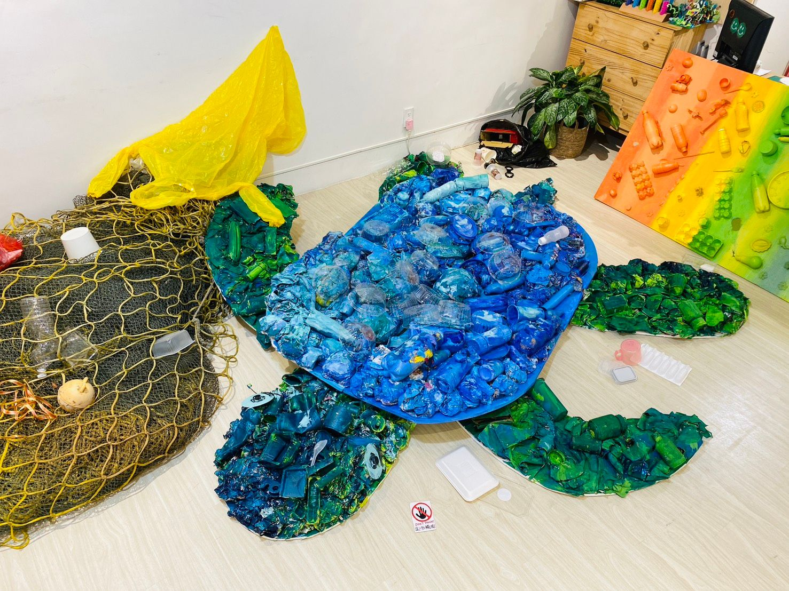
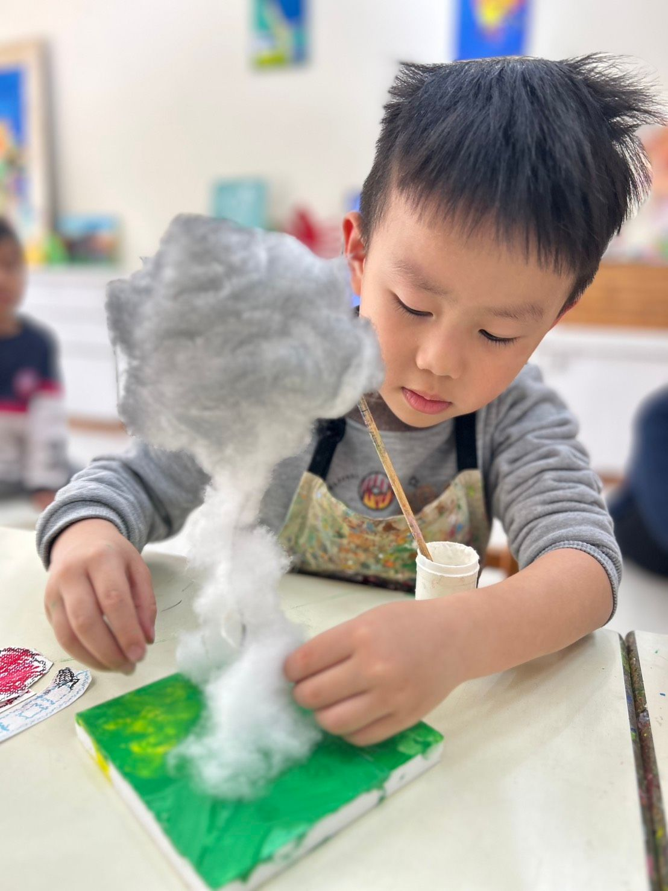

主題介紹
從創作中重新認識大自然的美與價值
自然，是孩子最早認識世界的方式。
而在這個氣候變遷加劇的時代，我們更希望孩子能用感官去貼近自然，用創作去理解自然，用行動去關心自然。
在大綠地的「自然」主題中，孩子從植物、動物、地景、天氣等元素出發，進行觀察與表達，
更進一步結合全球暖化、生態危機、海洋塑膠等議題，透過藝術轉化為對自然的理解與對生活的行動力。
我們相信：創作不只是美學的表現，更是與自然對話的方式。


從創作中重新認識大自然的美與價值
自然，是孩子最早認識世界的方式。
而在這個氣候變遷加劇的時代，我們更希望孩子能用感官去貼近自然，用創作去理解自然，用行動去關心自然。
在大綠地的「自然」主題中，孩子從植物、動物、地景、天氣等元素出發，進行觀察與表達，
更進一步結合全球暖化、生態危機、海洋塑膠等議題，透過藝術轉化為對自然的理解與對生活的行動力。
我們相信：創作不只是美學的表現，更是與自然對話的方式。
這一系列課程中，我們帶孩子體驗兩個面向的自然創作：
在創作過程中，孩子學會了觀察自然的細節、尊重生命的多樣性，也開始意識到自己的選擇會如何影響這個世界。
自然不是教材，它是真實存在、需要被關照的世界。
我們設計的不只是美術課，而是一場以藝術為媒介的感官教育與環境意識的啟動。
在這個主題中，孩子不只畫出山海、動物與風，而是學會：
看見正在改變的大自然，也願意成為守護自然的一份子。
讓藝術，不只是創造美，更是創造意義。